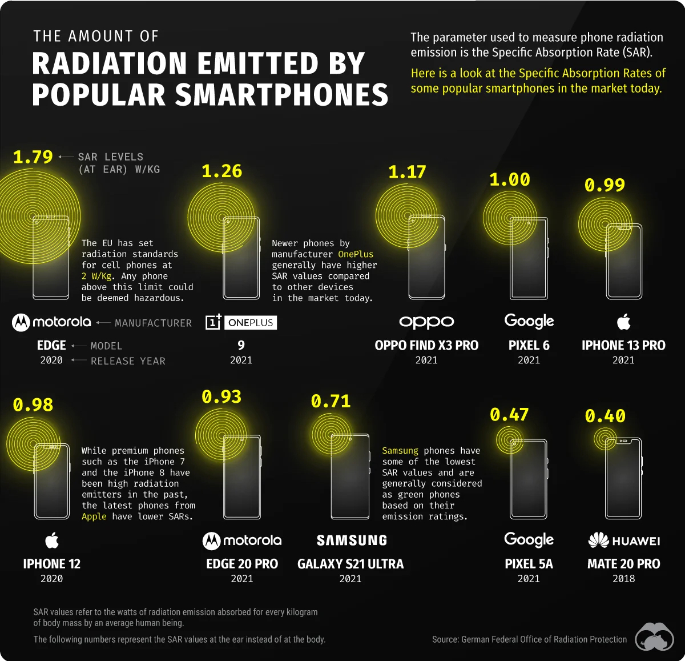
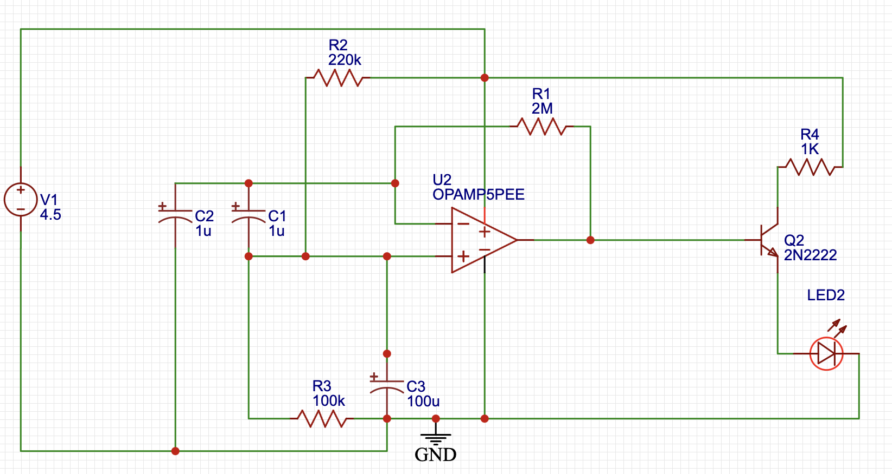
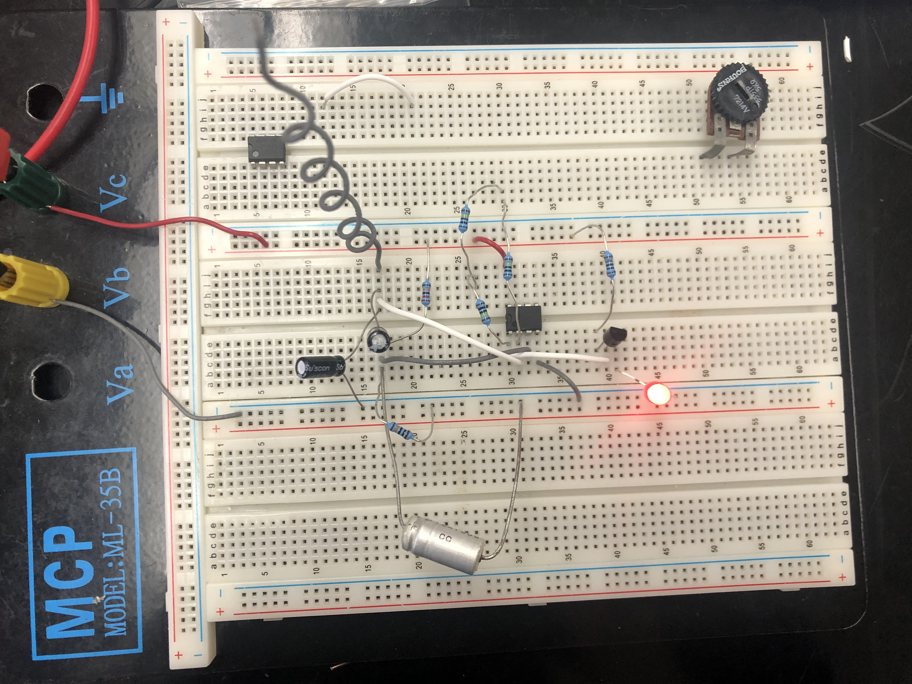
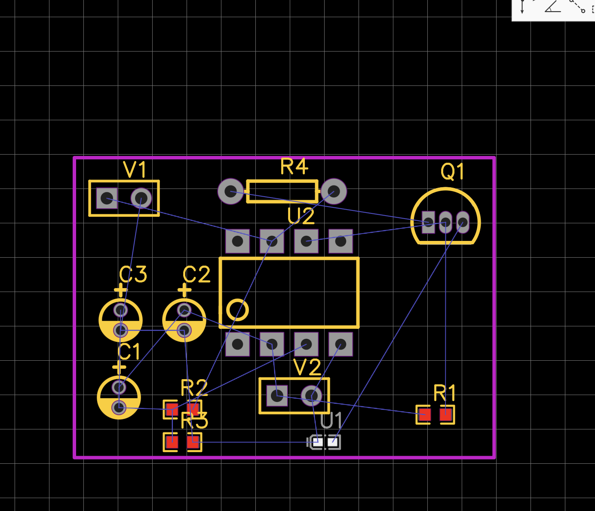
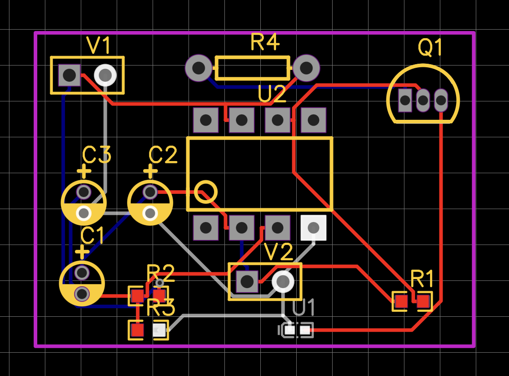
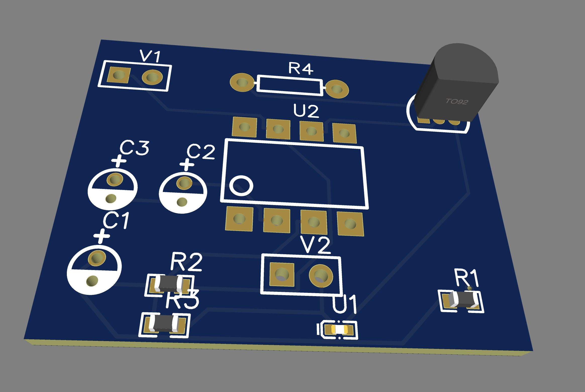

Contents
Introduction Concept and Background
Problem
Mobile phones are great tools, but they are bnned in some places.
Detecting phones being around is important.
Providing easy-to-use tools to detect phones.
What’s Being Detected ?
Key Point Almost all mobile phones emit EM radiation.
GSM, 2G, Searching for network, or SMS ∼ 800 MHz

Cicuit Diagram 
LM358P Op Amp
NPN Transistor
LED & Buzzer
Capacitros and resistors
In-Lab Testing 
A Quick Demo
Limitations
Very small coverage circle.
Requires antenna, and more tuning for is.
Radiation-free workplace.
Such circuits cannot be simulated.
What’s Next ?
PCB Before Routing 
PCB After Routing 
3D View 
Conclusion
The mobile phone detector based on an op amp is an effective and low-cost project, to deletct the existing of a mobile phone around via EM radiation emitted by the GSM signals.
Thank you for listening!